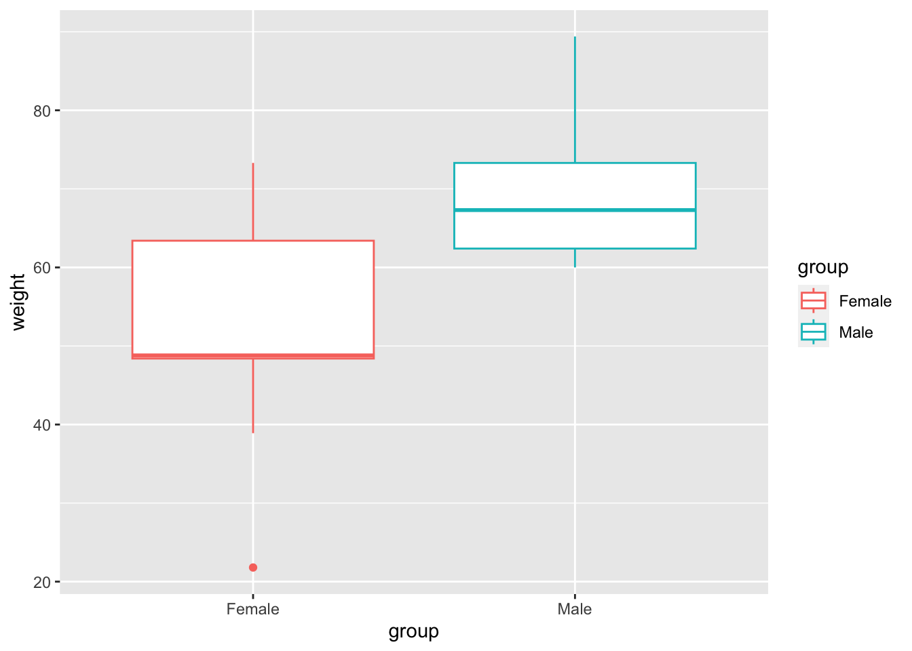

#install.packages("ggpubr")t-test
Unpaired Two-Samples T-test in R
What is unpaired two-samples t-test?
The unpaired two-samples t-test is used to compare the mean of two independent groups.
For example, suppose that we have measured the weight of 100 individuals: 50 female mouse (group A) and 50 male mouse (group B). We want to know if the mean weight of females (mA) is significantly different from that of males (mB)
In this case, we have two unrelated (i.e., independent or unpaired) groups of samples. Therefore, it’s possible to use an independent t-test to evaluate whether the means are different.
Caution
Note that, unpaired two-samples t-test can be used only under certain conditions:
when the two groups of samples (A and B), being compared, are normally distributed. This can be checked using Shapiro-Wilk test.
and when the variances of the two groups are equal. This can be checked using F-test.
Research questions and statistical hypotheses
Typical research questions are:
whether the mean of group A (mA) is equal to the mean of group B (mB)?
whether the mean of group A (mA) is less than the mean of group B (mB)?
whether the mean of group A (mA) is greather than the mean of group B (mB)?
In statistics, we can define the corresponding null hypothesis (H0) as follow:
- H0:mA=mB
- H0:mA≤mB
- H0:mA≥mB
The corresponding alternative hypotheses (Ha) are as follow:
- Ha : mA≠mB (different)
- Ha: mA>mB (greater)
- Ha:mA<mB (less)
Formula of unpaired two-samples t-test
- Classical Test
If the variance of the two groups are equivalent (homoscedasticity), the t-test value, comparing the two samples (A and B), can be calculated as follow.
\[ t = \frac{m_A - m_B}{\sqrt{ \frac{S^2}{n_A} + \frac{S^2}{n_B} }} \]
where,
\(m_A\) and \(m_B\) represent the mean value of the group A and B, respectively.
\(n_A\) and \(n_B\) represent the sizes of the group A and B, respectively.
\(S^2\) is an estimator of the pooled variance of the two groups. It can be calculated as follow:
\[ S^2 = \frac{\sum{(x-m_A)^2}+\sum{(x-m_B)^2}}{n_A+n_B-2} \]
- Welch t-statistics
If the variances of the two groups being compared are different (heteroscedasticity), it’s possible to use the Welch t test, an adaptation of Student t-test.
Welch t-statistic is calculated as follow :
\[ t = \frac{m_A - m_B}{\sqrt{ \frac{S_A^2}{n_A} + \frac{S_B^2}{n_B} }} \]
are the standard deviation of the the two groups A and B, respectively.
Caution
Unlike the classic Student’s t-test, Welch t-test formula involves the variance of each of the two groups (\(S_A^2\) and \(S_B^2\)) being compared. In other words, it does not use the pooled variance \(S\).
The degrees of freedom of Welch t-test is estimated as follow :
\[ df = (\frac{S_A^2}{n_A}+ \frac{S_B^2}{n_B^2}) / (\frac{S_A^4}{n_A^2(n_B-1)} + \frac{S_B^4}{n_B^2(n_B-1)} ) \]
Note
A p-value can be computed for the corresponding absolute value of t-statistic (|t|).
Note
A p-value can be computed for the corresponding absolute value of t-statistic (|t|).
Note
If the p-value is inferior or equal to the significance level 0.05, we can reject the null hypothesis and accept the alternative hypothesis. In other words, we can conclude that the mean values of group A and B are significantly different.
Visualize your data and compute unpaired two-samples t-test in R
Install ggpubr R package for data visualization
R function to compute unpaired two-samples t-test
To perform two-samples t-test comparing the means of two independent samples (x & y), the R function t.test() can be used as follow:
# t.test(x, y, alternative = "two.sided", var.equal = FALSE)
Note
x,y: numeric vectors
alternative: the alternative hypothesis. Allowed value is one of “two.sided” (default), “greater” or “less”.
var.equal: a logical variable indicating whether to treat the two variances as being equal. If TRUE then the pooled variance is used to estimate the variance otherwise the Welch test is used.
Import your data into R
Here, we’ll use an example data set, which contains the weight of 18 individuals (9 females and 9 males):
# Data in two numeric vectors
female_weight <- c(38.9, 61.2, 73.3, 21.8, 63.4, 64.6, 48.4, 48.8, 48.5)
male_weight <- c(67.8, 60, 63.4, 76, 89.4, 73.3, 67.3, 61.3, 62.4)
# Create a data frame
my_data <- data.frame(
group = rep(c("Female", "Male"), each = 9),
weight = c(female_weight, male_weight)
)We want to know, if the average female’s weight differs from the average male’s weight?
Check your data
# Print all data
print(my_data) group weight
1 Female 38.9
2 Female 61.2
3 Female 73.3
4 Female 21.8
5 Female 63.4
6 Female 64.6
7 Female 48.4
8 Female 48.8
9 Female 48.5
10 Male 67.8
11 Male 60.0
12 Male 63.4
13 Male 76.0
14 Male 89.4
15 Male 73.3
16 Male 67.3
17 Male 61.3
18 Male 62.4Compute summary statistics by groups:
library(dplyr)
Attaching package: 'dplyr'The following objects are masked from 'package:stats':
filter, lagThe following objects are masked from 'package:base':
intersect, setdiff, setequal, uniongroup_by(my_data, group) %>%
summarise(
count = n(),
mean = mean(weight, na.rm = TRUE),
sd = sd(weight, na.rm = TRUE)
)# A tibble: 2 × 4
group count mean sd
<chr> <int> <dbl> <dbl>
1 Female 9 52.1 15.6
2 Male 9 69.0 9.38Visualize your data using box plots
# Plot weight by group and color by group
#library("ggpubr")
#ggboxplot(my_data, x = "group", y = "weight",
# color = "group",
# ylab = "Weight", xlab = "Groups")# OR
library(ggplot2)
ggplot(my_data, aes(x=group, y=weight)) + geom_boxplot(aes(color=group))
Preleminary test to check independent t-test assumptions
Assumption 1: Are the two samples independents?
- Yes, since the samples from males and females are not related.
Assumtion 2: Are the data from each of the 2 groups follow a normal distribution?
Use Shapiro-Wilk normality test as described at: Normality Test in R. - Null hypothesis: the data are normally distributed - Alternative hypothesis: the data are not normally distributed
We’ll use the functions with() and shapiro.test() to compute Shapiro-Wilk test for each group of samples.
# Shapiro-Wilk normality test for Male's weights
with(my_data, shapiro.test(weight[group == "Male"]))# p = 0.1
Shapiro-Wilk normality test
data: weight[group == "Male"]
W = 0.86425, p-value = 0.1066# Shapiro-Wilk normality test for Female's weights
with(my_data, shapiro.test(weight[group == "Female"])) # p = 0.6
Shapiro-Wilk normality test
data: weight[group == "Female"]
W = 0.94266, p-value = 0.6101From the output, the two p-values are greater than the significance level 0.05 implying that the distribution of the data are not significantly different from the normal distribution. In other words, we can assume the normality.
Note
Note that, if the data are not normally distributed, it’s recommended to use the non parametric two-samples Wilcoxon rank test.
Assumption 3. Do the two populations have the same variances?
- We’ll use F-test to test for homogeneity in variances. This can be performed with the function var.test() as follow:
res.ftest <- var.test(weight ~ group, data = my_data)
res.ftest
F test to compare two variances
data: weight by group
F = 2.7675, num df = 8, denom df = 8, p-value = 0.1714
alternative hypothesis: true ratio of variances is not equal to 1
95 percent confidence interval:
0.6242536 12.2689506
sample estimates:
ratio of variances
2.767478 The p-value of F-test is p = 0.1713596. It’s greater than the significance level alpha = 0.05. In conclusion, there is no significant difference between the variances of the two sets of data. Therefore, we can use the classic t-test witch assume equality of the two variances.
Compute unpaired two-samples t-test
Question: Is there any significant difference between female and male weights?
1) Compute independent t-test - Method 1: The data are saved in two different numeric vectors.
res <- t.test(female_weight, male_weight, var.equal = TRUE)
res
Two Sample t-test
data: female_weight and male_weight
t = -2.7842, df = 16, p-value = 0.01327
alternative hypothesis: true difference in means is not equal to 0
95 percent confidence interval:
-29.748019 -4.029759
sample estimates:
mean of x mean of y
52.10000 68.98889 2) Compute independent t-test - Method 2: The data are saved in a data frame.
# Compute t-test
res <- t.test(weight ~ group, data = my_data, var.equal = TRUE)
res
Two Sample t-test
data: weight by group
t = -2.7842, df = 16, p-value = 0.01327
alternative hypothesis: true difference in means between group Female and group Male is not equal to 0
95 percent confidence interval:
-29.748019 -4.029759
sample estimates:
mean in group Female mean in group Male
52.10000 68.98889
Important
In the result above :
t is the t-test statistic value (t = 2.784),
df is the degrees of freedom (df= 16),
p-value is the significance level of the t-test (p-value = 0.01327).
conf.int is the confidence interval of the mean at 95% (conf.int = [4.0298, 29.748]);
sample estimates is he mean value of the sample (mean = 68.9888889, 52.1).
Important
Note that:
- if you want to test whether the average male’s weight is less than the average female’s weight, type this:
t.test(weight ~ group, data = my_data,
var.equal = TRUE, alternative = "less")
Two Sample t-test
data: weight by group
t = -2.7842, df = 16, p-value = 0.006633
alternative hypothesis: true difference in means between group Female and group Male is less than 0
95 percent confidence interval:
-Inf -6.298536
sample estimates:
mean in group Female mean in group Male
52.10000 68.98889 Or, if you want to test whether the average male’s weight is greater than the average female’s weight, type this
t.test(weight ~ group, data = my_data, var.equal = TRUE, alternative = "greater")Two Sample t-test data: weight by group t = -2.7842, df = 16, p-value = 0.9934 alternative hypothesis: true difference in means between group Female and group Male is greater than 0 95 percent confidence interval: -27.47924 Inf sample estimates: mean in group Female mean in group Male 52.10000 68.98889
Interpretation of the result
Note
The p-value of the test is 0.01327, which is less than the significance level alpha = 0.05. We can conclude that male’s average weight is significantly different from female’s average weight with a p-value = 0.01327.
Access to the values returned by t.test() function
The result of t.test() function is a list containing the following components:
Note
statistic: the value of the t test statistics
parameter: the degrees of freedom for the t test statistics
p.value: the p-value for the test
conf.int: a confidence interval for the mean appropriate to the specified alternative hypothesis.
estimate: the means of the two groups being compared (in the case of independent t test) or difference in means (in the case of paired t test).
The format of the R code to use for getting these values is as follow:
# printing the p-value
res$p.value[1] 0.0132656# printing the mean
res$estimatemean in group Female mean in group Male
52.10000 68.98889 # printing the confidence interval
res$conf.int[1] -29.748019 -4.029759
attr(,"conf.level")
[1] 0.95------
This material is adapted from http://www.sthda.com/english/wiki/unpaired-two-samples-t-test-in-r which licenced under the Attribution-NonCommercial-ShareAlike 3.0 United States (CC BY-NC-SA 3.0 US).